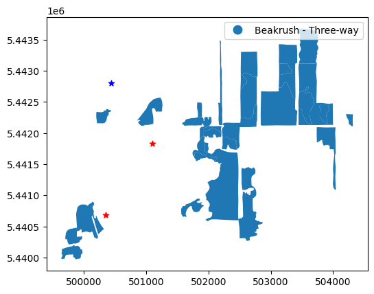
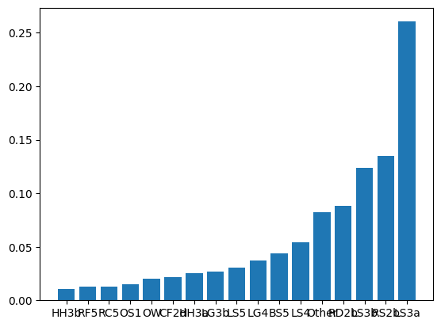

import geopandas as gpd
import matplotlib.pyplot as plt
BBECA = gpd.read_file('BB_Layers/ECOSYS_REV_TEM.shp')
BBECA = BBECA[['PRISTINE', 'ECO', 'MAP_UNIT', 'geometry']]
Towers = gpd.read_file('BB_Layers/Towers.shp')
Towers.loc[Towers['Name']=='Sapling_NoTreatment','Name']='BBS'
Burn = gpd.read_file('BB_Layers/SeedlingRemoval.shp')BBECA['MAP_UNIT']BBECA['AREA']=BBECA.area.values/1e6
Eco = BBECA[['MAP_UNIT','AREA']].groupby('MAP_UNIT').sum()
Eco['Pct']=Eco['AREA']/Eco['AREA'].sum()
Eco = Eco.sort_values(by='Pct')
print(Eco.index)
EcoIndex(['Water Lily - Watersh', 'Herb. veg on dist. p', 'Open Water',
'Cultivated Field', 'Disturbed Surface', 'Hardhack Thicket',
'Birch Forest', 'Mixed Conifer Forest', 'Pine-Salal Forest',
'Pine Sphagnum Woodla', 'Beakrush - Three-way', 'Pine Sphagnum Tall S',
'Beakrush - Sphagnum', 'Pine Sphagnum Low Sh'],
dtype='object', name='MAP_UNIT')| AREA | Pct | |
|---|---|---|
| MAP_UNIT | ||
| Water Lily - Watersh | 0.203007 | 0.006789 |
| Herb. veg on dist. p | 0.374083 | 0.012510 |
| Open Water | 0.602036 | 0.020133 |
| Cultivated Field | 0.799289 | 0.026730 |
| Disturbed Surface | 0.835726 | 0.027948 |
| Hardhack Thicket | 1.268282 | 0.042414 |
| Birch Forest | 1.352961 | 0.045246 |
| Mixed Conifer Forest | 1.362665 | 0.045570 |
| Pine-Salal Forest | 2.043343 | 0.068333 |
| Pine Sphagnum Woodla | 2.553501 | 0.085394 |
| Beakrush - Three-way | 2.929288 | 0.097961 |
| Pine Sphagnum Tall S | 3.686075 | 0.123269 |
| Beakrush - Sphagnum | 4.025041 | 0.134605 |
| Pine Sphagnum Low Sh | 7.867276 | 0.263097 |
Classes = {
'Water Lily - Watersh':'Water',
'Herb. veg on dist. p':'Other',
'Open Water':'Water',
'Cultivated Field':'Other',
'Disturbed Surface':'Other',
'Hardhack Thicket':'Other',
'Birch Forest':'Forested',
'Mixed Conifer Forest':'Forested',
'Pine-Salal Forest':'Forested',
'Pine Sphagnum Woodla':'Forested Peatland',
'Beakrush - Three-way':'Gramnoid Peatlant',
'Pine Sphagnum Tall S':'Forested Peatland',
'Beakrush - Sphagnum':'Gramnoid Peatlant',
'Pine Sphagnum Low Sh':'Forested Peatland'
}
fig,ax = plt.subplots()
BBECA.loc[BBECA['MAP_UNIT']=='Beakrush - Three-way'].plot(ax=ax,column='MAP_UNIT',legend=True)#,color='grey')
Towers.loc[Towers['Name']=='BBS'].plot(ax=ax,
marker='*',color='b')#,s=50,label = 'Short-term EC Stations')
Towers.loc[Towers['Name']!='BBS'].plot(ax=ax,
marker='*',color='r')#,s=50,label = 'Long-term EC Stations')
<Axes: >
fig,ax = plt.subplots()
BBECA['Area'] = BBECA.area
Ecosystems = BBECA[['Area','ECO']].groupby('ECO').sum()
Ecosystems['Pct'] = Ecosystems['Area']/Ecosystems['Area'].sum()
Ecosystems['Type'] = Ecosystems.index
Ecosystems.loc[Ecosystems['Pct']<.01,'Type']='Other'
Ecosystems=Ecosystems.groupby('Type').sum()
Ecosystems = Ecosystems.sort_values(by='Pct')
ax.bar(Ecosystems.index,Ecosystems['Pct'])
print(BBECA[['ECO','MAP_UNIT']]) ECO MAP_UNIT
0 LS5M Pine Sphagnum Woodla
1 LS5 Pine Sphagnum Woodla
2 BS4 Birch Forest
3 BS5 Birch Forest
4 RF5 Mixed Conifer Forest
.. ... ...
323 BS5 Birch Forest
324 LS3a Pine Sphagnum Low Sh
325 NaN Disturbed Surface
326 RK5 Mixed Conifer Forest
327 CF3a Cultivated Field
[328 rows x 2 columns]| FID_New_Sh | Id | FID_TEM | AREA | PERIMETER | TEM_ | TEM_ID | POLYNO | SDEC_1 | SITEMC_S1 | ... | TEMP | TEMP2 | SPH_CAT | RARE_AVG | SHAPE_Leng | Relative_C | Shape_Le_1 | Shape_Area | geometry | Area | |
|---|---|---|---|---|---|---|---|---|---|---|---|---|---|---|---|---|---|---|---|---|---|
| 0 | 0 | 0 | 1 | 36743.4 | 1132.020 | 0 | 0 | 325 | 0.0 | LS | ... | 0.0 | 0.0 | 0.0 | 0.0 | 1132.014988 | 0.001229 | 1132.014988 | 36743.402725 | POLYGON ((502523.750 5443928.500, 502523.750 5... | 36743.402725 |
| 1 | 0 | 0 | 2 | 144087.0 | 4012.370 | 0 | 0 | 2 | 6.0 | LS | ... | 17.5 | 7.0 | 3.0 | 2.5 | 4012.374419 | 0.004819 | 4012.374419 | 144087.437250 | POLYGON ((504031.125 5443898.000, 503953.250 5... | 144087.437250 |
| 2 | 0 | 0 | 3 | 13745.8 | 456.104 | 0 | 0 | 326 | 0.0 | BS | ... | 0.5 | 0.5 | 1.0 | 2.5 | 456.104395 | 0.000460 | 456.104395 | 13745.801550 | POLYGON ((502866.062 5444164.500, 502871.469 5... | 13745.801550 |
| 3 | 0 | 0 | 4 | 19291.2 | 737.207 | 0 | 0 | 324 | 0.0 | BS | ... | 0.5 | 0.5 | 1.0 | 2.5 | 737.206913 | 0.000645 | 737.206913 | 19291.201825 | POLYGON ((503126.438 5444165.500, 503124.344 5... | 19291.201825 |
| 4 | 0 | 0 | 5 | 237700.0 | 5060.100 | 0 | 0 | 4 | 0.0 | RF | ... | 0.0 | 0.0 | 0.0 | 2.0 | 5060.104511 | 0.007949 | 5060.104511 | 237699.842875 | POLYGON ((505809.406 5442370.000, 505821.781 5... | 237699.842875 |
5 rows × 82 columns
